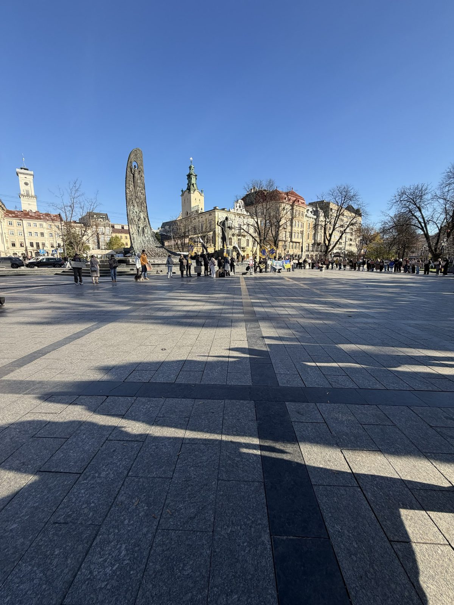
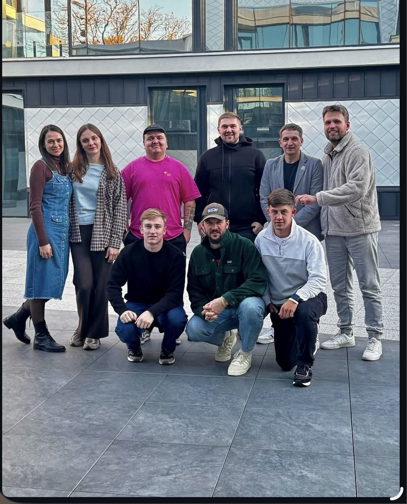
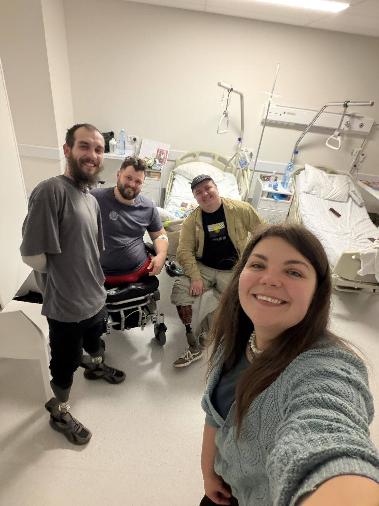
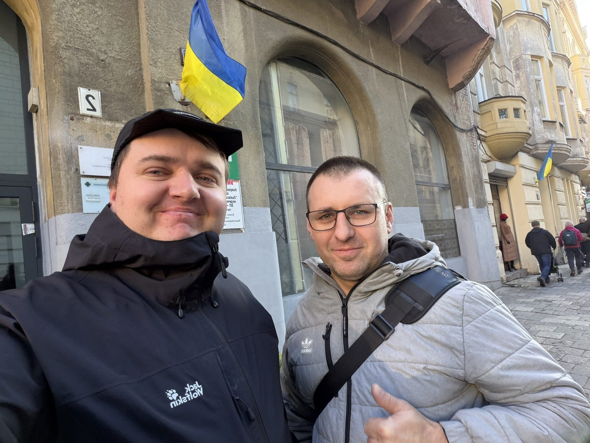
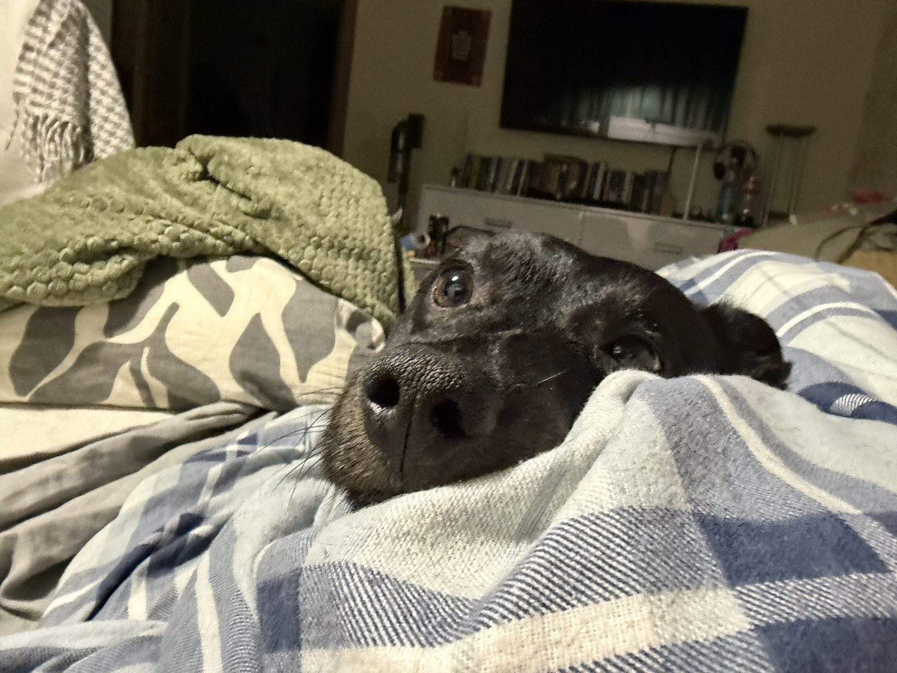
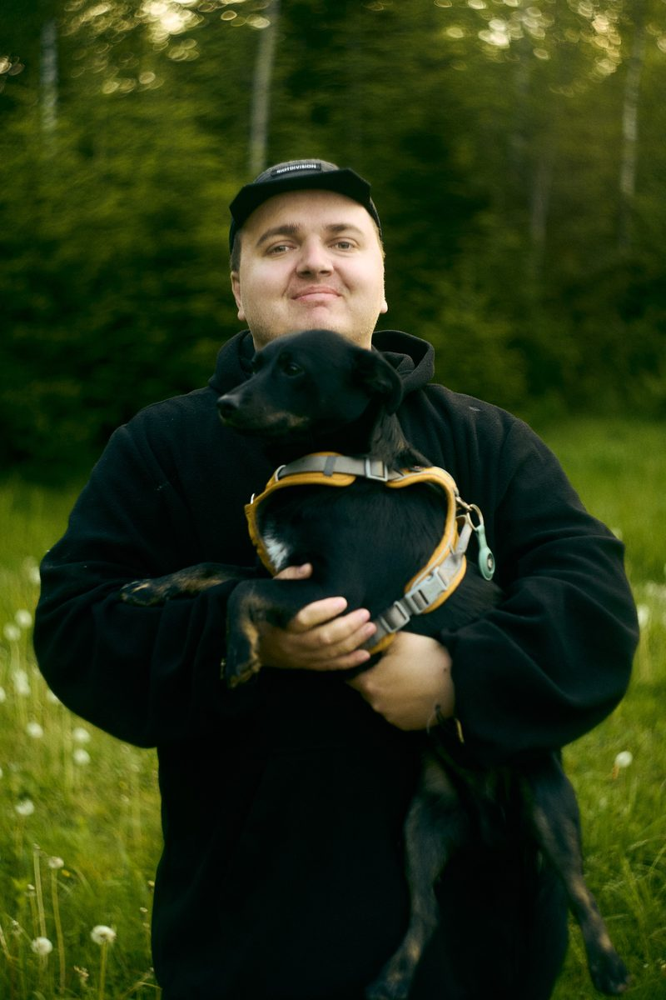

Листопад вийшов цікавим. Було в ньому навчання, регулярні події і розмови з ветеранами, якими дуже хочу з вами поділитись.

Площа Шевченка. Ми про них пам'ятаємо.

«Надійся на Господа всім своїм серцем, а на розум свій не покладайся! На всіх своїх дорогах пізнавай Його, і Він випростує твої стежки!»
— Приповісті 3:5-6
Листопад почався з навчання, була сесія в семінарії. Зараз я навчаюсь на розвитку церковного служіння, але не до кінця впевнений, що мені це зараз потрібно. Розумію, що рухаюсь трохи в іншому напрямку, і, мабуть, краще було б змінити курс на більш профільний.
Але дуже тішусь спільнотою, яку там маю, і розмовами, які були цього тижня.

«А ті, хто надію кладе на Господа, силу відновлять, крила підіймуть, як орли»
— Ісая 40:31
Мав можливість відвідати Сашка. Він, як і всі в моїх листах, герой. Сашко втратив три кінцівки, але продовжує жити, і жити активно. Зараз він на керівній посаді у Ветеранському корпусі в Івано-Франківську.
У нього з'явилась можливість зробити остеоінтеграцію на руку (це коли протез кріпиться прямо до імплантату в кістці), щоб краще функціонувати і водити авто. Тож він приїхав на першу процедуру.
Заодно змогли зустрітись ще з іншими хлопцями. Сфотографувались на тему недавніх слів міністра ветеранів про те, що ветерани підуть у криміналітет.

«Носіть тягарі один одного, і так виконайте закона Христового»
— Галатів 6:2
Про Юру я вже колись розповідав у листах, і радію, що він відкритий до спілкування. Приємний чоловік, який теж чимало постраждав. Через групу, яку йому дали, держава захищає його найменше.
Через лікування він, на жаль, потрапив у борги і зараз намагається з цим справлятись. І все одно вигрібає, мене це в ньому досі вражає. До служби Юра був масажистом і займався музикою, але масажем через травму займатись більше не може.
Зараз дуже хоче допомагати ветеранам і багато цікавиться пільгами. Тільки скажи, що тобі треба зробити, а в нього вже є кілька посилань)

«Досить тобі Моєї благодаті, бо сила Моя здійснюється в немочі»
— 2 Коринтян 12:9
Цього тижня мене знову накрило. Здавалось, почав вирівнювати всі сфери як слід, і тут знову підкосило. Важко зосередитись, важко бути там, де багато людей. Всередині починається паніка, і хочеться просто втекти.
Ще й мігрені через погоду і фантомні болі загострились. У такі моменти трохи складно вірити, що щось покращиться. Але я покладаюсь на Христа і знаю, що і це пройду разом з Ним.
Вирішив поділитись і цим, бо знаю, що ви молитесь і підтримуєте. Дуже вам за це вдячний.
Коли є можливість, продовжую ходити на мітинги за військовополонених. Для мене це дуже цінно, бо про них не забувають. Найжахливіше було б просто забути і жити далі, ніби нічого не сталось.
Ваша підтримка дає змогу бути поруч із хлопцями. Вона покриває ретрити та витрати місії на наступний рік.
Приват24 / Monobank
«Платіж за IBAN», рахунок:
UA063052990000026004045007863
Отримувач: Місія «Україна для Христа». У коментарі до платежу обов'язково вкажіть мій номер у місії:
5544
Рахунок 200211, Ministry of Oleksandr Kyliushyk. Онлайн: p2c.com/donate
Дякую, що ви поруч у цьому служінні. Ваші молитви я відчуваю навіть на відстані.
«Пам'ятайте про в'язнів, ніби й ви ув'язнені з ними, і про тих, хто страждає, бо й самі ви в тілі»
— Євреїв 13:3
Олександр Килюшик
З благословенням у Христі
Служіння серед військових · Місія «Україна для Христа»